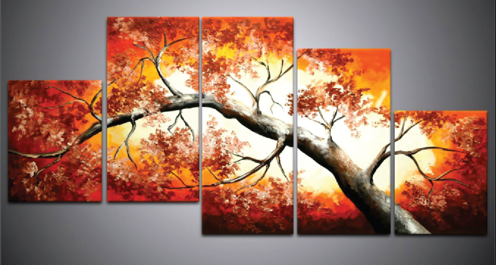

Печать плакатов в Ubuntu

Сейчас вы ознакомитесь о возможности печатать постеров в Ubuntu, или другими словами — как распечатать большое изображение или документ на многих листах меньшего размера.
Рассмотрим несколько вариантов для решения данной задачи.
Вариант 1 — программа Posterazor.
Она разрезает изображение на определенное количество страниц формата A4 и может установить требуемые поля для склейки. В программе отсутствует русскоязычный интерфейс и она не понимает кириллицу. Вместо русских названий файлов и каталогов вы увидите кракозябры. Поэтому, чтобы не было проблем с поиском нужных изображений, переименуйте нужную картинку в английской раскладке. Результат своей работы Posterazor сохраняет в многостраничном pdf файле. Для установки выполните команду в Терминале:
sudo apt-get install posterazor
Вариант 2.
Далее на помощь придет программа Draw из офисного пакета LibreOffice. Заходим в меню Формат — Страница. Указываем нужный размер входящего файла (Ширина-Высота). Далее Вставка — Изображение и открываем нужную картинку. Заполняем ею созданный пустой файл. Если у вас не установлен виртуальный принтер в системе, то установим командой в Терминале:
sudo apt-get install cups-pdf
Теперь Файл — Печать. Открываем вкладку LibreOffice Draw. Отмечаем пункт — Печать плакатом.
Программа сразу же разобьет ваше изображение на определенное количество листов А4. На вкладке Общие выбираем виртуальный PDF принтер и жмем Ок. В Домашней директории появится каталог PDF, в котором и будет сохранен многостраничный pdf файл.
Вариант 3.
Далее могу посоветовать консольную утилиту pdfposter. Установим ее командой:
sudo apt-get install pdfposter
Заходим в каталог с PDF файлом, который нужно разбить на части. Теперь выполним команды, которые разобьют файл на нужное количество листов А4.
2 листа А4
pdfposter -p 2x1a4 input.pdf out.pdf
4 листа А4 (2х2)
pdfposter -p 2x2a4 input.pdf out.pdf
9 листов А4 (3х3)
pdfposter -p 3x4a4 input.pdf out.pdf
12 листов А4 (4х3)
pdfposter -p 4x3a4 input.pdf out.pdf
16 листов А4 (4х4)
pdfposter -p 4x4a4 input.pdf out.pdf
Подробнее о программе и ее настройках:
man pdfposter
Но иногда бывает, что вместо разрезанного изображения я получал лишь множество пустых pdf файлов. Поэтому в данном случае могу посоветовать следующий выход. Установим утилиту imagemagick командой:
sudo apt-get install imagemagick
Выполним в каталоге с проблемным pdf файлом следующую команду:
convert -density 600 input.pdf out.png
После этой команды мы получим изображение out.png с разрешением 600dpi. А теперь можно разрезать данное изображение в Posterazor.
Вариант 4.
Используем программу PhotoPrint. Установим ее командой:
sudo apt-get install photoprint
1. Открываем нужное изображение Снимок — Добавить.
2. Далее Макет — Плакат.
3. Устанавливаем нужный размер в правой части (Размер или Элементы).
4. Сохраняем результат. Файл — Экспорт — JPEG или TIFF. Указываем нужный каталог для сохранения.
Вариант 5.
Используем графический редактор GIMP.
1. Открываем нужное изображение — Файл — Открыть.
2. Допустим нужно разбить изображение на 8 листов А4. Для этого будем использовать инструмент Направляющие. Изображение — Направляющие — Создать направляющую по %. Выбираем Вертикаль и устанавливаем значение 25% в параметре Расположение. Жмем Ок. Так же добавляем направляющие со значениями 50% и 75%.
3. Добавляем направляющие для Горизонтали. В нашем примере будет всего одна направляющая со значением 50%.
4. Далее Изображение — Преобразования — Гильотина.
5. Сохраняем созданные 8 изображений.
6. Полученные изображения посылаем на печать.
Вариант 6.
Есть отличный онлайн-сервис для создания постеров — http://rasterbator.net/
1. Жмем Print Yourself.
2. Добавляем изображение, либо указываем адрес картинки в сети.
3. Далее в Paper settings выбираем на каких листах будете производить печать (А4, А3, А2…) и их ориентация (альбомная или книжная). Жмем Continue.
4. В Output size выбираем количество листов по высоте(high) или ширине(wide). Жмем Continue.
5. В разделе Style я бы советовал выбрать пункт No Effects. Жмем Continue.
6. В разделе Color я все оставил по умолчанию. Жмем Continue.
7. В последнем разделе Options отмечаем пункт Crop marks, для печати полей для склейки. Пункт Output оставил без изменений (Enlarge).
8. В моем случае получилось 8 листов. Жму кнопку Rastebrate 8 pages! и жду диалога для сохранения результата. Ждать иногда можно по несколько минут, т.к. сервис онлайн и в очереди может быть много заданий.